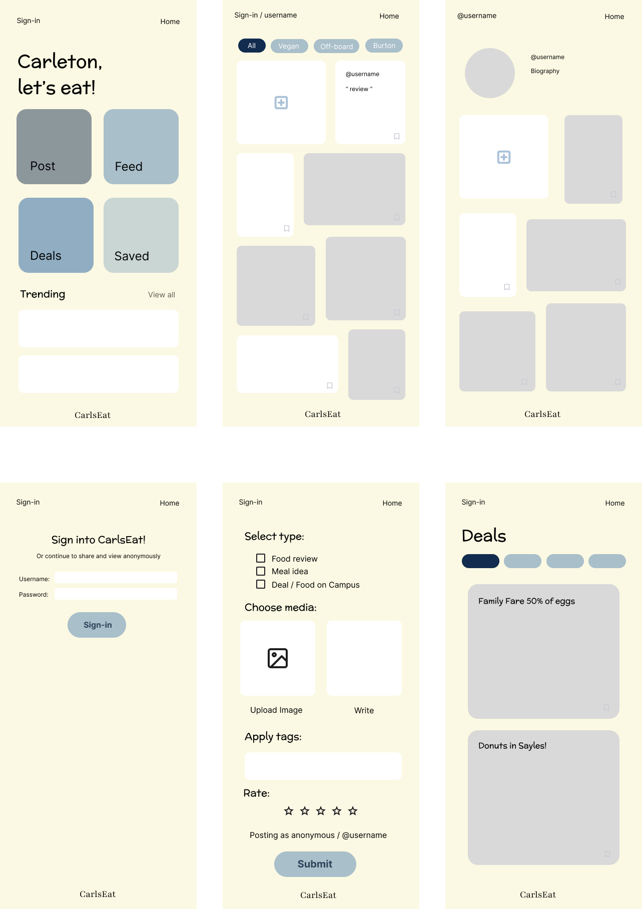
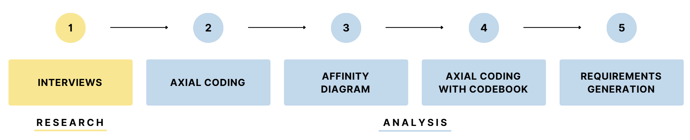

Carls Eat
Team Members:Chloe Simanek, Ekow Anderson, Scott Gevurtz, Zubeyda Shute
Problem
Many Carleton students are unhappy with their dining hall experience, citing issues such as food poisoning, frequently mislabeled dietary information, and the high cost of the meal plan. Our goal is to prototype a platform where students can share and rate meals, suggest dining hall or off-campus meal ideas, and post about food-related deals or events near campus. By using the app, students can plan ahead and improve their overall dining experience.
Solution
CarlsEat App
Low-fidelity Prototype
Adressing User Needs
Posting Options- Since students have busy schedules, they may not always have time to take a photo of their meal. To address this, the app gives them the option to post images and/or text. The app also allows users to tag their posts with relevant details, such as the dining hall the meal is from or any dietary restrictions it meets, catering to diverse preferences and needs. Depending on their experience, users are able to leave a positive or negative review using a five-star rating scale. Finally, users are able to post different types of content (reviews, ideas, or deals/events).
- Some interviewees expressed concerns about sharing their identity on the platform. To address this, the prototype allows students to post and view content anonymously if they choose.
- Students want an easy way to find and revisit meal ideas. The app includes a feature that lets users save posts, which are then collected in a section accessible on their profile and home page. To encourage engagement, popular posts with a high number of saves will be featured in a "Trending" section on the home page.
- A collage-style display with filtering options allows users to either browse casually or quickly find the information they need.
Requirements
| Requirement | Description | Prototype |
|---|---|---|
| Facilitate meal discussion | Users are able to share detailed reviews for meals, provide feedback about the food, and their overall experience. Posting reviews facilitates meal discussion, which we found is already prevalent on campus through word-of-mouth discussion. | From the home page, users have the option to “Post”. By clicking “Post”, they are taken to a page where they can post a review by following the step-by-step instructions. There are also several other features, such as "Trending" and "Resources", that promote discussion. |
| Dietary restriction and preference accommodation | Users are able to filter and/or tag reviews based on dietary restrictions and preferences (e.g., vegan, gluten-free, high-protein, desserts). Students have a variety of needs, and we want to make it easy for them to find the best meal possible. | When looking at the feed, users can select a filter at the top of the page. For example, if a student is vegan, they can select the “vegan” tag and only see posts that show vegan-friendly meals. When posting, users can select tags relevant to their post. They are required to select one of the tags from the first row, while the others are optional. |
| Multiple posting format options | Users are able to make reviews in three formats: images, text, and a five-star rating system. People rely on various factors when making meal decisions, so we needed to provide a holistic approach to ratings. For example, some users may quickly want to look at a rating, while others may want a longer description or visual. | When posting, users are able to upload an image, text, and rate their meal. The only required content is text in order to provide enough context for a post. |
Mid-fidelity Prototype
View complete prototype and interaction flows on Figma.
Research and Analysis Process
Research
Across our four-person team, we conducted two semi-structured interviews and three focus groups. We started by developing protocols for both a semi-structured interview and a focus group. We tested our protocols through mock interviews and made revisions as needed.
For the formal interviews, I conducted one of the focus groups. Like the other interviews, my participants were Carleton students. We aimed to include students with diverse meal plans, dietary restrictions, financial aid statuses, and, if possible, those with work-study placements in the dining hall. These interviews gave us insight into students' experiences with Carleton’s dining services, helping us shape our app’s functionality and design.
"I would say it's actually much better than I expected it to be, in terms of being vegetarian. I like Burton, better than LDC, because they always have a tofu dish or the blocks of tofu. They have a good sauce in there sometimes."
Analysis
After conducting interviews we completed the following analysis steps:
- Initial Axial Coding
- As a team we chose two transcripts and each coded one. This involved identifying phenomena, conditions, actions, and consequences in the interviewees' responses.
- Affinity Diagram
- We then wrote down and categorized our tentative codes, creating an affinity diagram.
- Create Codebook
- Using our affinity diagram, we developed a codebook that included our codes, definitions, and examples.
| Category | Description | Example |
|---|---|---|
| Convenience | Ease of access for a student | Weather, location, schedule |
| Preferences | Students' likes/dislikes, extracurriculars, personal motivations and experiences, and any dietary preferences or restrictions | Vegetarian, protein goals for student-athletes |
- Axial Coding with Codebook
- We repeated the axial coding process, this time using our codebook and coding all five transcripts twice.
- Consensus Building
- Then we built consensus around our codes, ensuring we were interpreting and applying them consistently.
- Requirements Generation
- Finally, we identified how many participants mentioned each code. We used these results to formulate our requirements statements.
UX Evaluation
Process
I conducted a focus group with two Carleton students. Each participant completed an evaluation task while I tracked metrics. Afterward, I facilitated a discussion to gather further insights. This process was repeated for all three evaluation tasks.
Evaluation Tasks
| Task | Scenario | Explanation |
|---|---|---|
| 1 | You wanted to know someone’s opinion about the current dining hall food. How would you see that? | Evaluates how easily users can navigate to the feed. |
| 2 | You noticed a post that coincides with your food preferences. How would you save the post? | Evaluates the user’s ability to interact with content. |
| 3 | You just had a good meal at LDC, and you want to share your experience with other students. How would you create a post? | Evaluates the user's ability to create a post. |
Results
| Task | Metric | User 1 | User 2 |
|---|---|---|---|
| 1 | Clarifying questions | 1 | 0 |
| 2 | Errors | 0 | 0 |
| 3 | Time | 00:36:15 | 00:33:82 |
User Feedback
Summary of UX Evaluation Results
Overall, both users successfully navigated the prototype, completing each evaluation task quickly with minimal errors or questions. They appreciated the simple, well-labeled design, as well as the flexibility in posting, tag options, and the centralized resources page. However, they expressed interest in adding a 'like' feature alongside the save option and the ability to search posts. One participant also asked about required tags for posting, indicating that this aspect was unclear.
Improvements After Evaluation
- Added search bar on the feed page
- Added option to like posts
- Clarified what content is required to post
- Added content and completed styling on resources page
- Updated style of buttons and scroll bars
- Styled home page icons
Final Prototype


View complete final prototype and interaction flows on Figma.
Future Steps
Prototype
- Improve anonymous vs. public posting option
- The option to post anonymously emerged as an important feature during our initial interviews. However, during my UX evaluation, a participant expressed confusion about the distinction between anonymous and public posts. I'd like to implement a more intutive method for selecting post visibility.
- Cohesive graphic design / Re-branding
- My initial design features pastel Carleton colors with a hand hand-drawn aesthetic. However, I'd like to play around with other design styles and branding.
Beyond
- Implement content monitoring features
- Some users were concerned that the app might not always be used as intended by college students. I want to add general privacy settings and content monitoring to help address this.
- Integrate the dining hall menu into the app
- Users mentioned that having the dining hall menu available while viewing or making posts would be helpful. I want to explore the best way to integrate the menu so it’s useful for students.
- Further interviews
- Interview more students off the meal plan to better understand how they would use the app.
- Interview students about what resources they would like to have on the resources page.